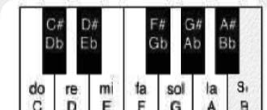
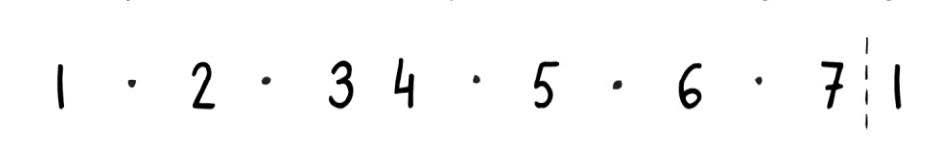
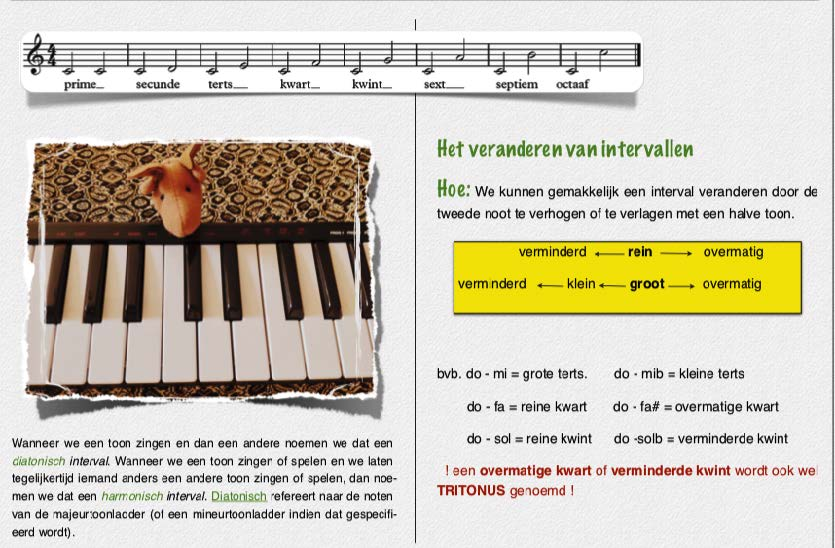

De Majeur Toonladder.
Wat?
De majeurtoonladder is gewoon een groepje noten die een bepaald patroon volgen en die
de mens blijkbaar erg leuk vindt klinken. Sterker nog, we houden er zo van dat de
meerderheid van de songs die we op de radio horen zijn opgebouwd uit deze noten. De
majeurtoonladder is dus heel belangrijk voor de Westerse muziek.
Voorbeelden: “Over The Rainbow”- The Wizard of Oz, “Basketcase”- Greenday, “A Whole New World” - Aladdin (Disney), “Hey Jude” - The Beatles, “Blowin In The Wind” - Bob Dylan, “Bad Romance” - Lady Gaga, etc.
Hoe?
De majeurtoonladder komt overeen met de witte toetsen van de piano. We starten de majeurtoonladder vanaf de toets/noot/toon die we ‘do’ of C noemen.
We merken op dat er tussen de 3e en 4e noot en de 7e en 1e noot geen zwarte toets is, wat wil zeggen dat er een natuurlijke halve toon tussen deze noten bevindt. Alle andere noten van de majeurtoonladder hebben een hele toon tussen hen. In cijfers uitgedrukt kunnen we het zo noteren:
De Intervallen
Wat: Een interval is de afstand tussen twee tonen. We geven ze de volgende namen:
- Prime
- Secunde
- Terts
- Kwart
- Kwint
- Sext
- Septiem
- Octaaf
Waarom?
Waarom wordt de naam ‘rein’ gebruikt? Daar waar de intervallen rein zijn (prime, kwart, kwint en octaaf) horen we de twee noten als het ware samensmelten. Natuurkundigen zouden zeggen dat de twee tonen van een rein interval vele gemeenschappelijke frequenties in hun boventonenreeks hebben. Een rein interval blijft rein in omgekeerde volgorde, bijv. do-fa (kwart) en fa -do (kwint).
Bij een terts en sext horen we gemakkelijker de twee noten afzonderlijk (iets minder gemeenschappelijke frequenties) en zijn daardoor rijker van klank. Ze kleuren prettig voor onze oren. De secunde en septiem klinken dan weer zeer onrustig en vragen naar een oplossing. Natuurkundigen zouden zeggen dat ze weinig gemeenschappelijke frequenties in hun boventonenreeks hebben en het daarom lijkt alsof ze ‘botsen’ in onze oren.
Lees meer over boventonen: Wat zijn boventonen?
